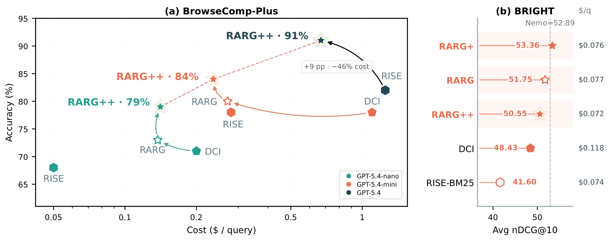
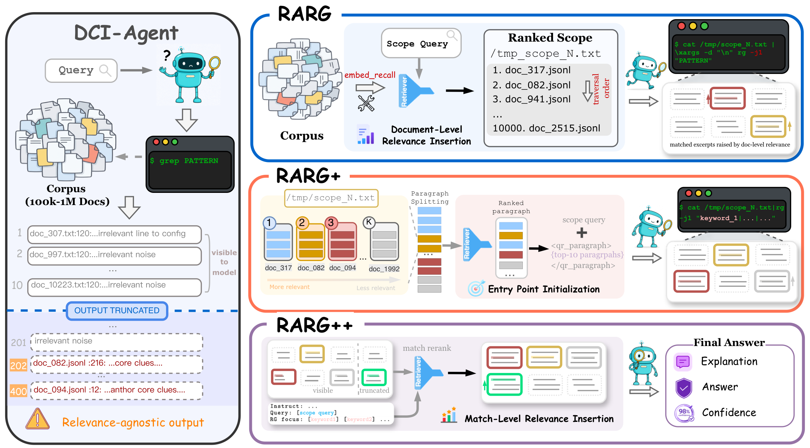
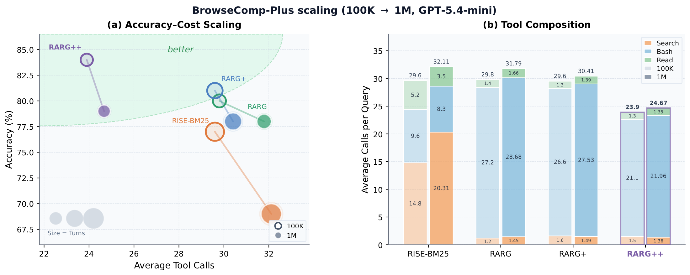
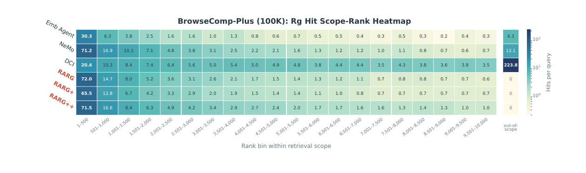
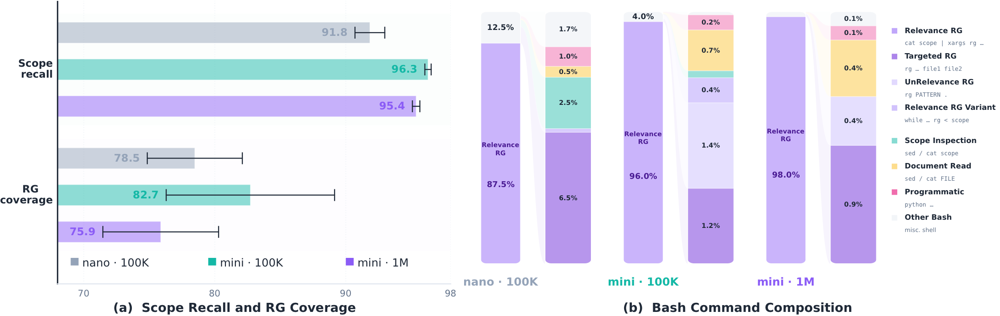

Relevance should guide interaction.
Existing retrieval agents use relevance to select top-k content, but document relevance alone cannot localize, compose, or verify the evidence required by complex questions. Direct Corpus Interaction enables fine-grained exploration, yet relevance-agnostic search can expose useful clues late and delay convergence.
We introduce the Relevance-Aware RipGrep Search Agent (RARG), which turns relevance into an execution prior for corpus interaction. It orders document traversal, initializes promising entry points, and reranks local matches so useful evidence reaches the model earlier.
Coarse-to-fine relevance guidance.
RARG preserves the fine-grained, compositional interface of direct corpus interaction while using retrieval scores as guidance rather than a hard evidence bottleneck.

rg searches first; match-level relevance determines which excerpts reach the model.rg scan documents sequentially in relevance order.
Higher accuracy with fewer interactions.
Following RISE, we evaluate on the 100-query BC+ setting and 4 BRIGHT subsets (biology, earth science, economics, robotics). Across these settings, relevance-aware interaction improves both search quality and convergence efficiency.
BrowseComp-Plus · 100-query · 100K corpus
Main results on 100-query BC+ with a 100K-document corpus, consistent with RISE. Turns and Tools are average agent turns and tool calls; Search / Bash / Read break down tool usage. For RARG, Search denotes embed_recall.
| Model | Method | Acc ↑ | Turns | Tools | Search | Bash | Read |
|---|---|---|---|---|---|---|---|
| GPT-5.4 mini (medium) |
RISE | 78 | 24.3 | 28.7 | 13.1 | 9.2 | 6.4 |
| RISE-BM25 | 77 | 23.0 | 29.6 | 14.8 | 9.6 | 5.2 | |
| RISE-Q3-Emb-4B | 69 | 28.9 | 35.9 | 22.1 | 9.1 | 4.7 | |
| Retrieval-Agent | 68 | 29.2 | 38.9 | 37.0 | – | 1.9 | |
| DCI | 78 | 48.8 | 99.1 | – | 90.3 | 8.8 | |
| RARG | 80 | 18.2 | 29.8 | 1.2 | 27.2 | 1.4 | |
| RARG+ | 81 | 20.2 | 29.6 | 1.6 | 26.6 | 1.3 | |
| RARG++ | 84 | 17.6 | 23.9 | 1.5 | 21.1 | 1.3 | |
| RARG++ (generative) | 75 | 15.8 | 17.8 | 1.2 | 15.4 | 1.3 | |
| GPT-5.4-nano (high) |
RISE | 68 | 23.4 | 28.7 | 10.4 | 8.4 | 4.6 |
| RISE-BM25 | 64 | 22.0 | 29.6 | 10.2 | 8.1 | 3.7 | |
| DCI | 71 | 45.7 | 126.5 | – | 119.4 | 7.1 | |
| RARG | 73 | 39.9 | 41.4 | 9.1 | 29.5 | 2.8 | |
| RARG+ | 74 | 40.2 | 39.8 | 14.5 | 22.4 | 2.9 | |
| RARG++ | 79 | 36.0 | 36.1 | 9.6 | 23.4 | 3.1 | |
| GPT-5.4 (medium) |
RISE | 82 | 32.20 | 34.30 | 11.00 | 16.20 | 7.10 |
| RARG++ | 91 | 13.59 | 25.43 | 1.58 | 19.46 | 4.39 |
Table 1. Main results on 100-query BC+ with a 100K-document corpus (consistent with RISE). RARG++ reaches the best accuracy on every backbone while sharply reducing tool cost relative to DCI.
BrowseComp-Plus · 100-query · scaling to 1M
After expanding the same 100-query BC+ setting with 900K long FineWeb-Edu documents, RARG++ retains a clear margin over RISE-BM25 with only a small increase in tool calls.
| Model | Method | Acc ↑ | Turns ↓ | Tools ↓ | Search | Bash | Read |
|---|---|---|---|---|---|---|---|
| GPT-5.4 mini (medium) |
RISE-BM25 | 69 | 25.4 | 32.1 (+2.5) | 20.3 (+5.5) | 8.3 (−1.3) | 3.5 (−1.7) |
| RARG | 78 | 19.3 | 31.8 (+2.0) | 1.5 (+0.3) | 28.7 (+1.5) | 1.7 (+0.3) | |
| RARG+ | 78 | 21.9 | 30.4 (+0.8) | 1.5 (−0.1) | 27.5 (+0.9) | 1.4 (+0.1) | |
| RARG++ | 79 | 17.8 | 24.7 (+0.8) | 1.4 (−0.1) | 22.0 (+0.9) | 1.4 (+0.1) |
Table 2. Results after scaling BrowseComp-Plus from 100K to 1M documents. Deltas are relative to each method’s 100K setting.

BRIGHT · 4 subsets
On 4 BRIGHT subsets (biology, earth science, economics, robotics), the objective favors broad candidate recall rather than fast QA convergence. RARG+ still attains the best average nDCG@10, ahead of the retrieval-specialized NeMo agent.
| Method | Avg. ↑ | Bio. | Earth | Eco. | Rob. | Tools | Search | Bash | Read |
|---|---|---|---|---|---|---|---|---|---|
| DCI | 48.43 | 62.05 | 54.94 | 37.13 | 39.59 | 40.04 | – | 14.73 | 25.31 |
| RISE-BM25 | 41.60 | 50.27 | 47.80 | 33.65 | 34.67 | 31.82 | 7.55 | 2.15 | 22.12 |
| NeMo Agent | 52.89 | 65.15 | 61.85 | 39.05 | 45.49 | 7.68 | 6.36 | – | – |
| RARG | 51.75 | 63.87 | 60.54 | 38.50 | 44.07 | 28.73 | 1.10 | 11.25 | 16.38 |
| RARG+ | 53.36 | 66.70 | 62.16 | 37.23 | 47.34 | 27.55 | 1.23 | 9.87 | 16.45 |
| RARG++ | 50.55 | 61.65 | 61.32 | 36.14 | 43.10 | 27.28 | 1.14 | 8.40 | 17.74 |
Table 3. Retrieval effectiveness on 4 BRIGHT subsets (nDCG@10) with GPT-5.4-mini. Tool counts reflect different interfaces and are not directly comparable across agent families.
How relevance shapes tool use.
Document-level relevance keeps evidence discovery front-loaded; match-level reranking recovers useful excerpts from lower-ranked documents; scoped rg dominates Bash usage when the backbone follows instructions.


rg versus non-scoped Bash, with residual command types.Citation.
If you find this work useful, please cite:
@misc{li2026newrolerelevanceguiding,
title = {A New Role for Relevance: Guiding Corpus Interaction in Agentic Search},
author = {Jiangnan Li and Yuqing Li and Mo Yu and Jinchao Zhang and Jie Zhou},
year = {2026},
eprint = {2607.24223},
archivePrefix = {arXiv},
primaryClass = {cs.CL},
url = {https://arxiv.org/abs/2607.24223}
}